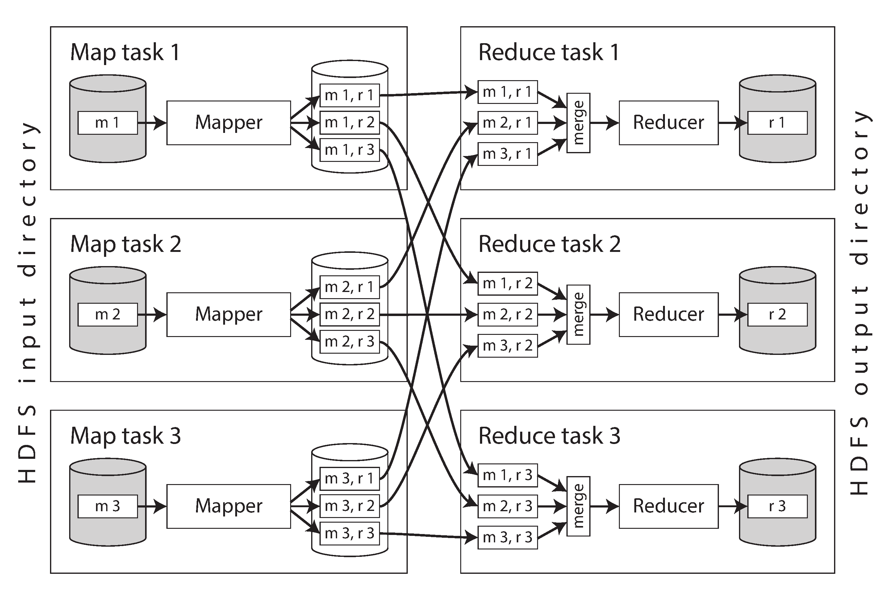
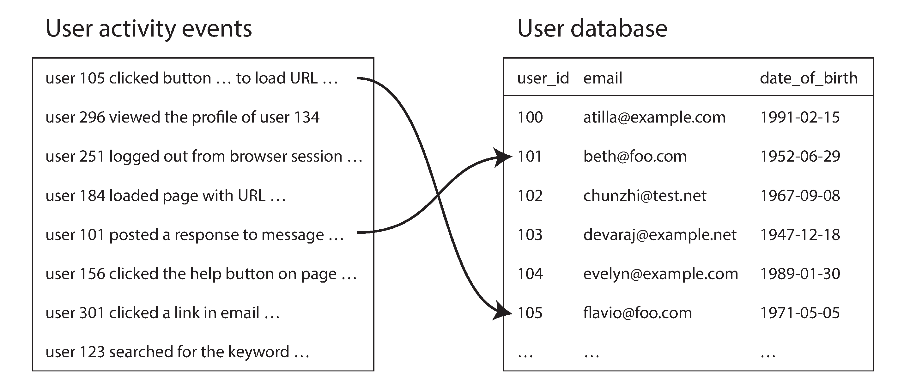
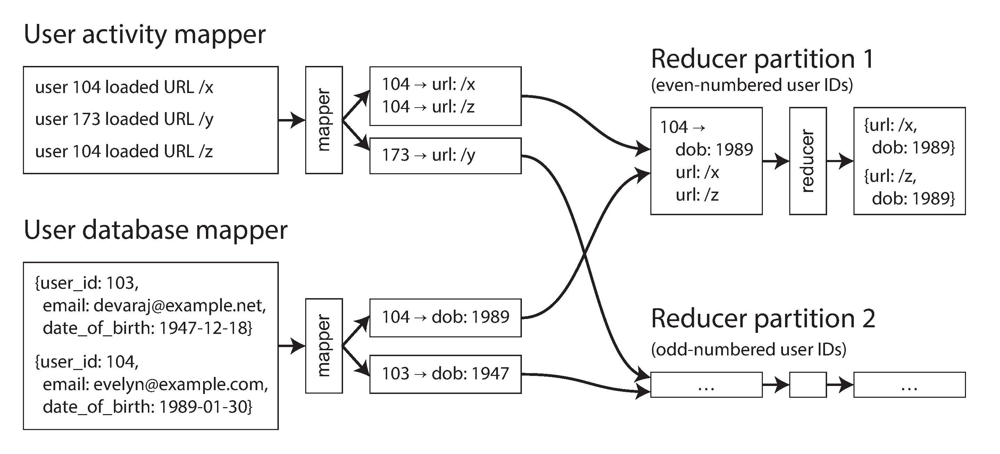

术语表 · 第 11 章 · 课程 11 / 14
批处理
前八章都在讨论「一次请求，一次响应」。这一章换了一个完全不同的坐标系：没有用户在线等，没有毫秒级的响应时间承诺，只有一个问题：怎么用一堆不靠谱的机器，把 TB 级数据从头到尾算一遍，而且算错了能重来。答案朴素得让人意外：先把输入变成不可变的，然后让重跑成为修复一切的手段。
11.1批处理到底在优化什么
在线系统（online system）以响应时间为主要性能指标，用户发请求、系统回答，答得慢就是坏。批处理（batch processing）作业，也叫离线系统（offline system），以吞吐量（throughput）为主要指标：单位时间内能处理多少数据。它回答的不是「这个用户要什么」，而是「这十亿行数据里有什么」。
这个差别导致了两套完全不同的工程取舍。在线系统里，一个请求失败要重试、要幂等、要防止重复扣款；批处理里，一个任务失败的处理方式简单粗暴：删掉它留下的不完整输出，换台机器重跑。为什么可以这么粗暴？因为批处理作业的定义本身就排除了副作用：它读取一组输入（只读），产生一组输出（每次运行都从头生成），不修改现有数据。输出是由输入衍生（derived）出来的。
批处理作业读取一组输入数据（只读），并产生一组输出数据（每次运行都从头生成）。它通常不会像读写事务那样修改现有数据。因此，输出是由输入衍生（derived）而来的：如果对输出不满意，只需把它删除，调整作业逻辑，再运行一次。把输入视为不可变（immutable）数据，并避免产生副作用（例如写入外部数据库），不仅能让批处理作业获得良好的性能，还会带来其他好处：
如果代码中引入了错误，导致输出有误或遭到破坏，只要回滚到先前版本的代码并重新运行作业，输出便能恢复正确。……大多数支持读写事务的数据库却不具备这种性质：如果错误代码把坏数据写进数据库，回滚代码并不能修复已经写入的数据。这种从错误代码中恢复的能力称为容忍人为失误（human fault tolerance）。
「容忍人为失误」这五个字是本课最该带走的东西，因为它直接推翻了大多数人对「数据安全」的直觉。直觉是：写进数据库的数据最安全，因为数据库有事务、有备份。但书里指出的恰恰相反：如果错误代码把坏数据写进了一个支持读写事务的数据库，回滚代码不会修复已经写进去的数据。你得写一个反向迁移脚本，而这个脚本本身可能又写错。而在不可变输入 + 全量重算的模型里，修复方式只有一条命令：切回旧版本的代码，重跑。大多数对象存储和开放表格式（Iceberg、Delta 之类）还支持时间旅行（time travel），旧输出原地保留，需要时切回去就行。
由这个性质还能推出一条工程原则，书里叫尽量减少不可逆操作（minimizing irreversibility）：因为回滚容易，功能开发可以比「犯错就造成不可逆损害」的环境推进得更快。这听起来像管理话术，其实是架构约束：一个系统的迭代速度，上限由它的可回滚性决定。凡是不可回滚的操作（发邮件、扣款、调用第三方下单接口），都要被隔离到最小、最晚的一步。
批处理的代价也很实在：大多数框架里，只有整个作业跑完，下游才能用它的输出；而且输入只要变一个字节，就得重新处理整个数据集。所以批处理不适合需要秒级新鲜的场景。它适合什么？书里给的定义很准：数据集成（data integration）：把多个数据系统组合起来，完成单个系统做不到的事。ETL、训练模型、生成推荐、算报表，全是这一类。
11.2从一条 Unix 管道开始
理解分布式批处理最好的入口，是一台机器上的命令行。假设你要找出网站访问量最高的五个页面，日志在 nginx 的 access.log 里：
cat /var/log/nginx/access.log | # 1 读日志
awk '{print $7}' | # 2 只留 URL（第 7 个字段）
sort | # 3 按字母排序，相同 URL 相邻
uniq -c | # 4 数相邻重复行，输出「次数 URL」
sort -r -n | # 5 按次数倒序
head -n 5 # 6 取前五输出大概长这样：
4189 /favicon.ico
3631 /2016/02/08/how-to-do-distributed-locking.html
2124 /2020/11/18/distributed-systems-and-elliptic-curves.html
1369 /
915 /css/typography.css这条管道几秒钟就能处理数 GB 日志，而且改分析口径只需改一个参数：想排除 CSS 文件，把 awk 换成 '$7 !~ /\.css$/ {print $7}'；想统计最活跃的客户端 IP，换成 '{print $1}'。这就是 Unix 哲学最实在的一次胜利。
但它藏着两个细节，正好对应分布式批处理的两大主题。
细节一：内存放得下和放不下，是两个算法
用 Python 重写这段逻辑，最自然的写法是用 defaultdict(int) 在内存里累加每个 URL 的计数。这很优雅，但它有个隐藏前提：不同 URL 的数量（工作集，working set）必须装进内存。工作集的大小不取决于日志有多大（十亿行日志也只有几万个不同 URL），所以通常没事。
改成「统计每个用户的访问次数」，工作集就变成了用户数，几千万。这时内存装不下，Python 版会 OOM，而 sort | uniq -c 照跑不误。为什么？因为排序法的内存占用只与排序缓冲区有关，与数据总量无关：先在内存里排一批、写成有序段文件，再逐步把段合并成更大的段，这正是第 4 章讲过的日志结构存储技术（LSM 树的底子）。GNU coreutils 的 sort 就是这么干的，而且会自动溢写磁盘、多核并行。
一条可以记住的判据：聚合的内存需求取决于键的数量，排序的内存需求取决于缓冲区大小。键的数量不可控（用户数、IP 数可能上亿），所以分布式批处理一律以排序为地基，而不是以哈希表为地基。
细节二：Unix 管道的边界是「一台机器」
管道用很小的缓冲区把命令串起来，这叫背压（backpressure）：下游慢了，上游自然被阻塞，不需要额外的流控机制。这个设计很漂亮，但它的天花板是单机：CPU 核数、磁盘带宽、内存，全都封顶。
要突破这个天花板，必须换一套东西：数据放哪（分布式文件系统 / 对象存储）、谁来跑（作业编排）、跑挂了怎么办（容错）、怎么把数据按需重新分布（混洗）。后面四节就是这四件事，而且你会发现它们和操作系统里的对应物几乎一一对应，这不是巧合，书里明确说「分布式批处理框架与操作系统很相似，同样拥有调度器和文件系统」。
11.3存储层：分布式文件系统与对象存储
操作系统有分层：块设备驱动 → 页缓存 → 文件系统 → 虚拟文件系统（VFS）。分布式批处理栈几乎是同一个形状：对象存储或 DFS 当块设备，作业编排器当内核调度器，计算引擎当用户态进程。
DFS 和本地文件系统最显著的差别是块的大小。ext4 的块是 4096 字节；HDFS 默认 128 MB；JuiceFS 和许多对象存储用 4 MB。为什么大这么多？因为块越大，元数据越少：一个 PB 级数据集按 4 KB 分块是 2500 亿个块，光元数据就能压垮任何元数据服务；按 128 MB 分块只有 800 万个。代价是尾部浪费：一个 900 MB 的文件按 128 MB 分块，是 7 个满块加 1 个只有 4 MB 的残块。
DFS 的另一个共同点是无共享（shared-nothing）：不用 SAN、不用 NAS，每台机器有自己的磁盘，靠复制或纠删码（Reed–Solomon）来容错。这也是它便宜的原因：商用硬件，坏一块换一块。
对象存储（S3、GCS、Azure Blob、Swift）更进一步，把文件系统抽象砍到只剩两个操作：get 和 put。这个简化带来一串必须知道的约束，评审时最容易踩：
- 对象不可变：更新必须整对象重写。改一个字节，等于重传整个文件。（Azure Blob 和 S3 Express One Zone 支持追加，是例外。）
- 没有文件句柄 API：没有
fopen/fseek，所以没法边写边读。 - 没有目录：只有 key，前缀列举类似
ls -R。空目录不存在（要放一个零字节对象占位）。 - 没有硬链接、符号链接、文件锁；重命名不是原子的，实际上是「复制 + 删除」两步。
最后一条经常直接炸掉程序：很多代码习惯「写临时文件 → 原子重命名」来保证不产生半个文件。在 S3 上这个动作有窗口期，读者可能看到两个对象都存在，也可能在复制完成前读不到。正确做法是写到一个新 key，然后通过一次元数据更新（或一个通知）来切换，而不是依赖重命名的原子性。
对象存储还有一个架构上的后果：它通常存算分离，而 DFS 可以把计算任务调度到有数据副本的机器上（计算下推）。存算分离换来的是弹性（计算和存储各自扩缩容），代价是每次读都要走网络。这就是为什么现代批处理那么在意「混洗数据尽量留在内存」。
11.4编排层：作业怎么被跑起来
一个批处理作业向编排器提出的请求，信息量比想象中大：任务数、每个任务需要多少内存/CPU/磁盘、作业 ID、访问存储的凭据、输入输出参数、是否需要 GPU 或特定磁盘类型、可执行代码在哪。这已经很像一个进程向内核申请资源了。
三个角色：
| 角色 | 干什么 | YARN | Kubernetes |
|---|---|---|---|
| 任务执行器 | 心跳、上报状态、拉代码、跑进程；用 cgroups 做安全与性能隔离 | NodeManager | kubelet |
| 资源管理器 | 维护节点元数据与全局资源视图，决定集群里有什么可分配 | ResourceManager | 控制面（apiserver） |
| 调度器 | 决定某个任务放到哪台机器上 | Scheduler | kube-scheduler |
资源管理器是中心化的，因此既是可伸缩性瓶颈也是可用性瓶颈。YARN 用 ZooKeeper 存它的状态，Kubernetes 用 etcd。回到第 10 章，这里就是在用共识服务做高可用。这也解释了为什么大规模集群里，编排器的故障恢复时间是硬指标：它一挂，整个集群停摆。
资源分配：一个被低估的 NP 难题
书里给了一个具体例子，值得完整走一遍：5 个节点、每个 32 核，共 160 核。两个作业各需要 100 核。怎么办？
- 各跑 80 核：都能跑，但都只用 80%，慢 20%。
- 成组调度（gang scheduling）：先等 100 核空闲，再一次性给作业 A；A 跑完再给 B。资源利用率高，但 A 跑的时候有 60 核闲置；更糟的是可能死锁：如果每个作业都已经占了一部分资源、都在等剩下的部分，谁也走不了。
- 先到先得：A 拿 100 核，B 等。B 会饥饿（starvation）。
- 抢占（preempt）：把 A 的部分任务杀掉给 B。被抢的任务要重启重跑，白干的活就是浪费。
这个问题是 NP-hard 的，实用方案都是启发式：FIFO、主导资源公平（DRF）、优先级队列、容量/配额调度、装箱算法。没有最优解，只有适合当前负载形状的近似解。这句话本身就是评审里该说的话，比承诺「我们的调度器很聪明」有用得多。
工作流：为什么需要 50–100 个作业
一个作业干不完一件事，需要拆成作业 DAG（有向无环图），理由有三：输出被多个团队的下游消费；需要跨工具（Spark 写 HDFS → Trino 跑 SQL → 结果进 S3）；管道本身分阶段（不同阶段按不同键分片）。书里说典型数据管道有 50 到 100 个作业。
Unix 管道靠小缓冲区做背压，Spark/Flink 也支持流式背压；但在工作流层面，更常见的做法是落盘解耦：每个作业把结果写到存储，下一个作业再从存储读。理由很实际：落盘意味着可以单独重跑某一段，而不用整条链重来。代价是延迟和 I/O 放大。
职责划分要记清楚：YARN 的 ResourceManager 和 Spark 自带的调度器只管单个作业内部；作业之间的依赖（谁在谁之后、失败了重试几次、跑完通知谁）由 Airflow、Dagster、Prefect 这类工作流调度器管。很多团队把这两层混在一起，结果是一堆 crontab 加 sleep。
容错：批处理的优势所在
任务为什么会挂？硬件故障、网络中断，还有一类容易被忽略的：调度器主动抢占。竞价实例（EC2 spot instance / Azure spot VM / GCP preemptible instance）便宜，但被抢的频率高于硬件故障。批处理对时效不敏感，正好适合用它们去消耗闲置算力，但这也意味着容错必须做得比在线系统更狠，而不是更松。
三种容错策略，代表三代技术：
| 系统 | 中间数据放哪 | 丢数据怎么办 | 代价 |
|---|---|---|---|
| MapReduce | 总是写回 DFS，等上游作业完成 | 重跑那个任务 | 大量 DFS 写入，慢 |
| Spark | 内存，放不下溢写本地磁盘 | 按血统（lineage）重算 | 重算链可能很长 |
| Flink | 定期做状态检查点（checkpoint） | 从最近检查点恢复 | 检查点本身有开销 |
关键洞察是：让并行任务彼此独立，才能按任务粒度重试。如果任务之间有依赖，一个挂了就得重跑一整段，成本指数上升。这就是 MapReduce 那个「mapper 不保留跨记录状态」的设计约束的真正用意：不是为了函数式优雅，是为了让重试便宜。
11.5计算层：MapReduce 与混洗
MapReduce 只有四步，而且你只需要写两个函数：
- 读输入、拆记录：格式由解析器管（日志按
\n分行；Parquet 是列式，Avro 是行式）。 - 对每条记录调 mapper，抽出键值对。日志例子里就是
awk '{print $7}'。 - 按键排序：这一步是隐式的，框架保证 mapper 输出在交给 reducer 之前一定排好序。
- 对排序后的键值对调 reducer：同一个键的记录相邻，所以合并时不需要在内存里攒全部数据。
第 3 步是整套设计的支点。它看起来只是「排个序」，实际上做了两件事：把同键数据物理聚到一起（原本散在不同机器的分片里），以及让 reducer 可以流式处理，它只需要一个迭代器，不需要一个哈希表。

混洗不是随机
书里专门加了个边栏纠正这个词：shuffle 在这里不产生随机性，它产生的是排好序的结果。洗扑克牌才是随机的。混洗（shuffle）是分布式排序算法的名字，输入输出都经过分片，用于 PB 级数据，这种量级不可能装进一台机器。
我们已经看到，本章开头的 Unix 工具示例和 MapReduce 都以排序为基础。批处理器必须能够对 PB 级的数据集排序，而这些数据不可能装入一台机器。因此，它们需要一种输入和输出都经过分片的分布式排序算法，这种算法称为混洗（shuffle）。
mapper 的输出由键值对组成。框架必须保证：如果两个不同的 mapper 输出了相同的键，这些键值对最终会由同一个 reducer 任务处理。为此，每个 mapper 都会在本地磁盘上为每个 reducer 分别创建一个输出文件。……mapper 输出一个键值对时，通常会对键进行哈希，据此决定把它写入哪个 reducer 文件，这与“按键的哈希分片”相似。
把流程完整走一遍，因为这是面试里最常被追问的机制：
- 每个输入分片起一个 map 任务。map 任务数由输入分片数决定，reduce 任务数由作业作者配置，两者可以不同。
- 每个 mapper 在本地磁盘上为每个 reducer 各建一个输出文件（m1,r2 表示 mapper 1 发给 reducer 2 的数据）。归属由键的哈希决定。
- 写文件的同时按键排序：内存有序结构 → 有序段文件 → 逐步归并。又是 LSM 那套。
- reducer 连到每个 mapper，把属于自己的有序文件复制到本地磁盘。
- 像归并排序一样合并这些文件，保持有序。此时同键记录必然相邻，即使它们来自不同 mapper。
- 每个键调一次 reducer，传一个迭代器。
- 输出顺序写入文件，r1/r2/r3 构成输出数据集的三个分片。
这个设计里有个隐藏的 I/O 放大，值得算一下：如果有 M 个 mapper、R 个 reducer，中间文件数是 M × R。1000 个 mapper 配 1000 个 reducer，就是一百万个文件。reduce 任务数不能随便调大。这是新手最常见的性能事故之一，把 reduce 数从 100 调到 5000，以为能加速，结果全花在开文件上。大数据系统（BigQuery 等）优化了这一点：尽量把混洗数据留在内存，或者写进专门的外部排序服务，并且复制混洗数据以提高容错。
JOIN 是混洗的第二个用途
混洗不只用于聚合，也用于连接。书里图 11-2 的例子是电商：左边是用户活动日志（点击流，事实表），右边是用户数据库（维度表），两者按用户 ID 连起来，这就是星型模式的一部分。

具体怎么连？排序合并连接（sort-merge join），图 11-3：
- 一个 mapper 遍历活动事件，以用户 ID 为键，输出
(用户ID, 页面URL)。 - 另一个 mapper 遍历用户库，以用户 ID 为键，输出
(用户ID, 出生日期)。 - 混洗把同一个用户的两类记录送到同一个 reducer。
- 二次排序（secondary sort）让 reducer 先看到用户库那条，再按时间戳看事件。
- reducer 把出生日期存进一个局部变量，然后遍历事件，输出
(URL, 出生日期)。
注意这里最漂亮的地方：任意时刻内存里只需要一条用户记录，不需要网络请求，也不需要在 reducer 里查库。第二个作业以 URL 为键再混洗一次，reducer 为各年龄段维护计数器，就是 GROUP BY。连接和分组，本质上都是「按同一个键把数据搬到一起」。这句话能省掉你很多解释。

MapReduce 为什么基本过时了
数据流引擎（Spark、Flink）把整个工作流当成一个作业来跑，而不是拆成一串独立子作业。好处有六条，值得记下来，因为这就是「为什么 Spark 比 Hadoop 快」的正确答案：
- 昂贵的排序只在真正必要时做（MapReduce 每个作业都强制排一次）。
- 不改变分片的算子链（map、filter）可以合并，不必各走一趟。
- 所有连接和依赖显式声明，优化器能做全局决策、改善数据局部性；阶段之间用共享内存缓冲区交换，不走网络。
- 中间状态多在内存或本地磁盘，I/O 远少于「每步都写 DFS」。
- 算子输入就绪就启动，不必等整个阶段完成，形成流水线。
- 进程复用：MapReduce 每个任务起一个新 JVM，启动开销在短任务上是灾难。
SQL 成了批处理的通用语言，因为它代码少、可交互式探索，更重要的是有查询优化器：Hive、Trino、Spark、Flink 都有基于代价的优化器，能自己选连接算法和顺序来减少中间状态。写 MapReduce 等于把优化器该干的活手工干了一遍，还干得不如它。这也是「批处理与云数据仓库正在收敛」的原因：两边都支持 SQL + Parquet + 向量化执行，差别越来越小。
11.6用批处理产出线上数据：一个真实的翻车现场
反例：批处理作业直接逐条写生产库
推荐系统每天凌晨跑一个 Spark 作业，算出 5000 万条用户-商品推荐分，然后在作业里直接调 MySQL 客户端，逐条 INSERT/UPDATE 到线上推荐表。理由是「反正就是写数据，干嘛多绕一层」。作业配置了失败重试 3 次。
四个问题同时发生。最直接的是慢：每条记录一次网络往返，比批处理的正常吞吐慢几个数量级，作业窗口从 1 小时拖到 6 小时。接着是压垮线上库：几百个并行任务同时以批处理的速率打同一个库，线上查询直接劣化，批处理的「快」变成了线上的「崩」。最致命的是它对「全有或全无」的破坏。作业本来承诺「成功则结果等同于每个任务恰好执行一次；失败则不产生任何输出」。可一旦写进外部系统，这个承诺就失效了：第 2 个任务写到一半失败、重试时，前面已经写进去的 200 万行已经对外可见。用户会看到一部分人拿到今天的推荐、另一部分人还是昨天的，而重试可能把同一批数据写两遍（如果写入不是幂等的，就是重复行）。最后还有一条：作业不可回滚。跑错了想重来？线上库已经被覆盖，没有旧版本可以切回去，这正好把 11.1 节那个「容忍人为失误」的能力亲手扔掉了。
正确做法是让作业只产出文件，不碰线上系统，然后用一条受控的通道把数据搬进去：
- 推进 Kafka 主题：流系统针对顺序写优化，适合大批量写入；天然是缓冲，下游可以自己限速，不挤占线上流量；一份输出可以被多个下游消费；还能部署在 DMZ 里，作为批处理网络与生产网络的安全边界。
- 但 Kafka 不解决原子性：作业完成时必须发一个「完成」通知，消费者在收到通知前要让数据对查询不可见，效果等价于读已提交隔离级别。
- 或者整库重建再原子切换：在作业内部构建一个全新的数据库，再批量导入（TiDB Lightning、Pinot/Druid 的 Hadoop 导入、RocksDB 批量导入 SST）。速度快、切换原子；缺点是增量更新难。混合方案如 Venice：既能按行批量更新，也能整体切换数据集。
这个反例的教训可以推广成一句话：批处理作业的正确性建立在「输出可以被整体丢弃」之上。任何在作业中途对外部系统产生的副作用，都会摧毁这个基础。评审时看到「作业里直接写生产库 / 发消息 / 调第三方接口」，就该亮红灯，除非那一步是作业的最后一个动作，且有幂等键。
11.7批处理都用来干什么
书里列了四类，前两类几乎是所有公司的日常：
| 用途 | 典型作业 | 关键约束 |
|---|---|---|
| ETL / ELT | 清洗、规范化、导入数据仓库；用工作流调度器做重试与失败标记 | 天然并行（过滤、投影）；出错可以只重跑有问题的那个文件 |
| 分析（OLAP） | 预聚合（物化视图、数据集市）推送到 Druid/Pinot；即席查询 | 预聚合看吞吐，即席查询看响应时间，两者架构不同 |
| 机器学习 | 特征工程、模型训练（输入训练数据、输出权重）、批量推理 | 迭代式算法（PageRank 这类图算法）用 BSP/Pregel 模型；LLM 数据准备是新的重头戏（抽文本、去重、分词、算 embedding） |
| 对外提供衍生数据 | 推荐分、用户报表、搜索索引 | 见上一节——绝不在作业里逐条写生产库 |
一个常被忽略的事实：银行的账务核对、制造业的需求预测，几乎全靠批处理。这类业务对「新鲜度」的要求是「一天一次」，对「正确性」的要求是「一条都不能错」，正是批处理的主场。反过来，如果你的场景要求「用户在 200 毫秒内看到刚才的操作」，那批处理根本不适用，去看第 12 章的流处理。
11.8面试里怎么答
问：「你们有个每天跑一次的数据管道，怎么保证它算出来的数据是对的、而且出错了能恢复？」
「基础是输入不可变 + 输出可重算。原始数据按天分区落对象存储，只追加不改写；每个作业只读输入、只写新路径，不碰线上库。所以修复路径只有一条：切回上一个版本的代码、指向同一个输入、重跑，输出写到新目录，验证通过后原子切换指针。这个能力叫容忍人为失误：如果错误代码写进了可读写的事务库，回滚代码是修不好已写数据的。
作业内部按任务粒度重试，靠的是任务之间无共享状态；中间数据用血统重算或检查点恢复。上游作业没成功，下游绝不启动。工作流调度器管这个依赖，不管作业内部的并行。
产出到线上时，作业只写文件或 Kafka，不逐条写生产库。要走 Kafka，就用「完成通知 + 未提交不可见」来保证全有或全无，等价于读已提交。整个链路是 50 到 100 个作业的 DAG，典型日切窗口 4 小时，完成时间定在早上 8 点前，这是我们内部的 SLO，不对外签 SLA，超时告警而不是让它慢慢跑。」
这段话能扛追问，因为每个点都带了一个可被检验的机制。追问「重跑一遍不是很慢吗」，你答全量重算的代价由输入分区和那条完成时间目标决定，真正贵的是重算频率，所以我们把不确定性隔离在最后一步；追问「为什么不用增量」，你答增量会把幂等和乱序问题引进来，先证明全量撑不住再上增量，这是第 1 课那条原则的又一次应用。
练习这批数据该怎么算
五个场景，都在「用批处理解决」。判断的关键是：这个作业的正确性基础是什么，以及它会不会被自己的失败模式毁掉。
要统计昨天每个 URL 的访问次数，日志 800 GB，不同 URL 约 20 万个。团队想用 Python 脚本读进 defaultdict 累加。
工作集只有 20 万个键，内存装得下，脚本能跑。但这是个危险的巧合：改成「按用户统计」，键数变成几千万，同一份代码立刻 OOM。排序法的内存只取决于排序缓冲区，与键数无关。所以正确的默认选择是排序/外部排序，而不是哈希表。判据：聚合内存看键的数量，排序内存看缓冲区大小。
作业要连接「订单事实表」和「用户维度表」，两侧都很大，都要按用户 ID 聚合。
排序合并连接是标准解：两侧同键混洗、reducer 侧归并，内存里只需保留一条维度记录。reducer 里查库会把网络请求塞进批处理循环，慢几个数量级且压垮线上库；广播只适合维度表足够小（能装进每个节点的内存）的情况；流处理的 join 有状态开销，不是这个场景的默认答案。
推荐作业算出 5000 万条结果，需要让线上推荐接口在早上 8 点前用上。团队打算在作业里直接 UPDATE 生产 MySQL。
作业内写外部系统会破坏「全有或全无」，产生无法隐藏的外部副作用，重试还可能重复写。而且它把「回滚代码就能恢复」这个能力扔掉了。正确路径是产出文件 → 受控导入（Kafka + 完成通知让数据在通知前不可见，或整库重建后原子切换）。加事务包不住跨系统的 5000 万行写入。
一个 Spark 作业跑在竞价实例上，平均每小时有 3 个任务被抢占。团队考虑关掉重试、让整个作业失败后重跑。
竞价实例被抢占的频率高于硬件故障，这是设计前提而不是意外。整体重跑会浪费已完成的所有任务；正确做法是让并行任务彼此独立、按任务重试，但前提是中间数据可恢复，Spark 靠血统重算、Flink 靠检查点。换按需实例能解决但成本翻倍，通常不值得。
数据管道有 80 个作业，用 crontab 按时间错开调度。某天上游晚了 40 分钟，下游全部读到不完整数据，报表出错。
crontab 表达的是「什么时候跑」，而管道的真实约束是「上游完成才能跑」。按时间编排必然在延迟或提前完成时失效，而且没有重试语义、没有失败标记、没有血缘。Airflow/Dagster/Prefect 这类调度器管的就是作业间依赖。拉大间隔只是把故障概率降低，没有消除根因。
贴进架构评审文档的话：「本管道采用不可变输入 + 全量重算模型：原始数据按天分区、只追加，作业只读输入、只写新路径，不在作业内对任何线上系统产生副作用。正确性基础是可重跑性：修复方式是回滚代码、重跑、验证后原子切换输出指针，因此对人为失误具备容忍能力。作业间依赖由工作流调度器按数据就绪而非时钟编排（当前 DAG 约 80 个作业）；作业内按任务粒度重试，中间数据以血统重算恢复。对外供数走「产出文件 → Kafka → 完成通知后可见」，保证全有或全无。已知限制：输入变更需全量重算，日切窗口 4 小时，增量更新能力尚未实现。」
一手资源
第 11 章 批处理（中文全译）：必读「批处理系统」（不可变输入那四条好处，是整章的地基）、「混洗数据」里的「混洗不是随机」边栏、「JOIN 与 GROUP BY」（图 11-3 的连接过程）、以及「对外提供衍生数据」（作业内写生产库为什么不行，四条理由写得很清楚）。
随时问我
把你们的数据管道画成一张图发我，有多少个作业、哪些靠 crontab、哪一步会写线上库。我们逐个作业标出：它的输入是否不可变、失败能不能单独重试、有没有在作业中途产生不可回滚的副作用。这三列里出现「否」的地方，就是出事时会救不回来的地方。